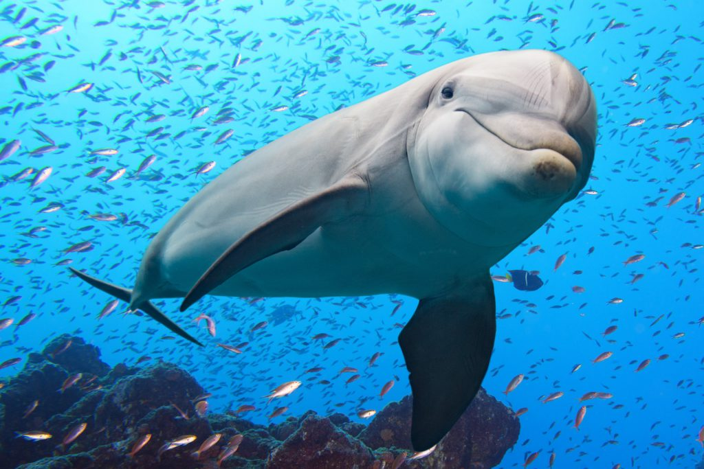

https://www.google.com/images
This webpage is all about dolphins! Dolphins are aquatic mammals and live in several different bodies of water all over the planet! They can be found in saltwaters, like the ocean, or in freshwaters, like rivers. My favorite species of Dolphins are Atlantic Spotted Dolphins because they are the ones I grew up seeing at the beach. Find out a little bit about all the different types and choose your favorite!
If you don't visit the beach often, you could visit one of the aquariums listed below!
If you can't get to an Aquarium either, there are two options below to learn about Dolphins! The table at the bottom of the page gives you insight to a couple of different species and how they compare to each other. An additional source is provided for extra learning capabilities!
After reviewing the following information, come back here and select your favorite species! Pick one from the drop down box below to let us know!
Additional source: Dolphin World
You can also click on the name of the Dolphin species within the table to see their picture!
| Type of Dolphin | What They Eat | Where They Are |
|---|---|---|
| Bottlenose Dolphin | Shrimp and Crustaceans | Pacific Ocean |
| Amazon River Dolphin | Shrimp, Crab, and Turtles | Amazon and Orinoco River Basins |
| Atlantic Spotted Dolphin | Fish, Squid, and Eels | Atlantic Ocean and Gulf of Mexico |
{kind=link}
{kind=link}
{kind=link}